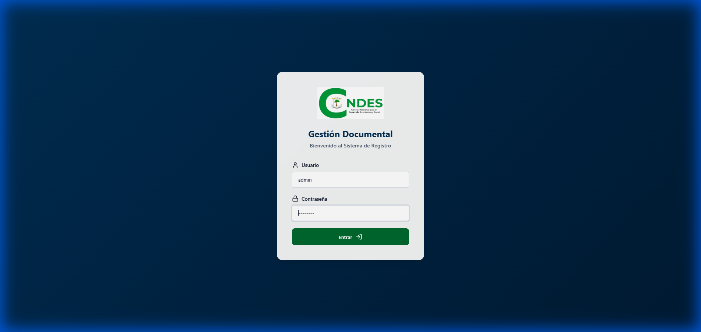
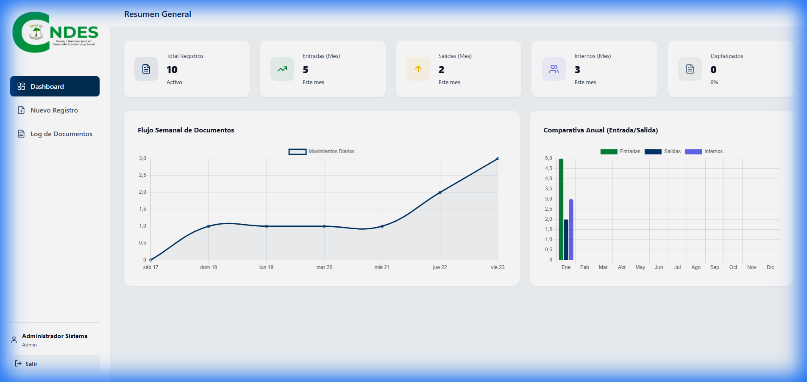
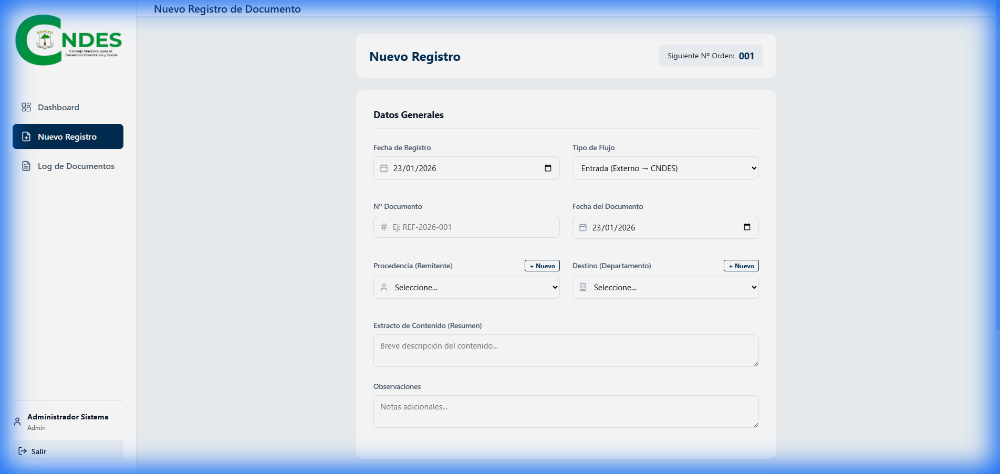
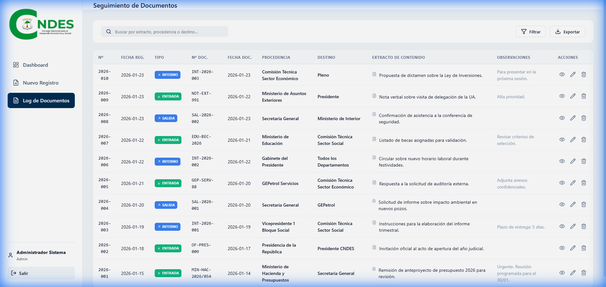
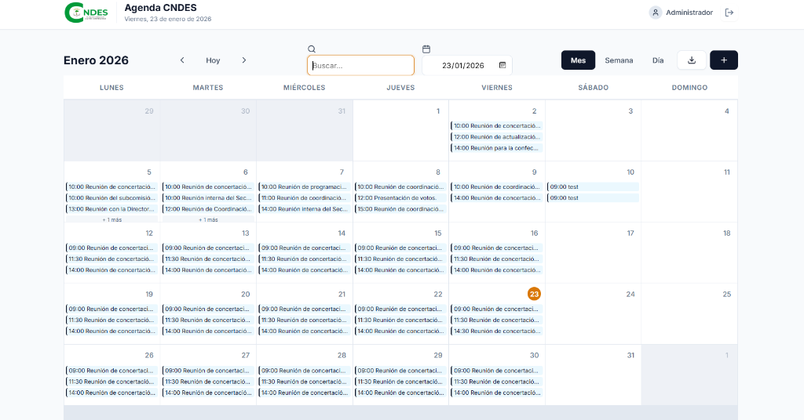
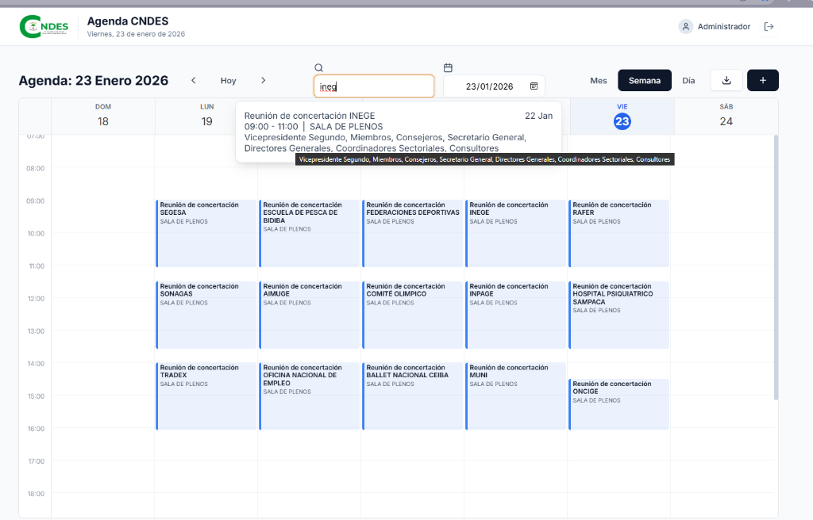

Manual de Usuario
Sistema de Gestión Documental y Recepción (SGDRecep)
CNDES - Guinea Ecuatorial
Bienvenido al Sistema de Gestión Documental y Recepción (SGDRecep). Este manual le guiará a través de todas las
funcionalidades del sistema, diseñado para modernizar y optimizar el flujo documental del CNDES.
1. Acceso al Sistema
Para acceder a la plataforma, utilice un navegador web compatible (Chrome, Edge, Firefox).
Pantalla de Inicio de Sesión
- URL:
http://localhost:5173/ (o la IP del servidor asignado).
- Credenciales: Ingrese su usuario y contraseña proporcionados por el administrador.
- Nota: Si introduce credenciales incorrectas, el sistema mostrará un aviso de error.

2. Panel de Control (Dashboard)
Al ingresar, visualizará el Dashboard, centro de mando para monitorear la actividad en tiempo
real.

Elementos del Dashboard:
- Tarjetas de Estadísticas (KPIs):
- Total Registros: Número global de documentos en la base de datos.
- Entradas (Mes): Documentos recibidos desde el exterior en el mes actual.
- Salidas (Mes): Documentos emitidos o despachados en el mes actual.
- Internos (Mes): Memorándums o comunicaciones entre departamentos.
- Digitalizados: Porcentaje de registros que cuentan con archivo adjunto
(PDF/Imagen).
- Gráficos:
- Flujo Semanal: Línea de tiempo que muestra la actividad de los últimos 7 días.
- Comparativa Anual: Gráfico de barras comparando volúmenes de Entradas, Salidas e
Internos a lo largo del año.
3. Gestión Documental: Nuevo Registro
Esta sección permite la digitalización e indexación de documentos físicos o digitales.
Flujo de Trabajo:
- Haga clic en "Nuevo Registro" en el menú lateral.
- El formulario se adapta dinámicamente según el Tipo de Flujo:
- Entrada: Para documentos que llegan de fuera (Ministerios, Empresas).
- Procedencia: Seleccione el remitente externo.
- Destino: Seleccione el departamento interno que recepciona.
- Salida: Para documentos que salen del CNDES.
- Procedencia: Su departamento.
- Destino: Entidad externa destinataria.
- Interno: Para memorándums internos.
Campos Importantes:
- Nº Documento:
- En Entrada: Usted debe escribir la referencia que trae el documento (ej.
OFICIO-2026/001).
- En Salida/Interno: El sistema genera automáticamente el correlativo (ej.
SAL-2026-0042).
- Fecha de Registro: Por defecto es hoy, pero puede modificarse si se está registrando con
retraso.
- Adjuntar Archivos:
- Puede subir múltiples archivos (PDF, JPG, PNG).
- Opción Móvil: Si accede desde una tablet/móvil, puede usar la cámara directamente para
escanear.
3. Al finalizar, presione "Guardar Registro". Verá una confirmación de éxito.

4. Consulta y Seguimiento (Log de Documentos)
El Libro de Registro Digital le permite buscar y gestionar todo el histórico documental.

Herramientas de Búsqueda:
- Barra Superior: Escriba cualquier palabra clave (nombre, número, asunto) y la tabla
filtrará instantáneamente los resultados.
- Orden: Los documentos más recientes aparecen primero.
Acciones sobre Documentos:
En la columna derecha de cada fila, encontrará botones de acción (según sus permisos):
- 👁️ Ver Detalle: Abre una ficha completa con todos los datos y permite descargar los
adjuntos.
- ✏️ Editar: Permite corregir errores o añadir información (ej. añadir un adjunto faltante).
- 🗑️ Eliminar: (Solo Administradores) Borra permanentemente el registro.
Descarga de Archivos:
Desde la vista de detalle "Ojo", si el documento tiene un clip o archivo adjunto, verá un botón
"Descargar" para guardar el PDF en su ordenador.
5. Administrador: Gestión de Entidades
Si durante un registro no encuentra la "Entidad Externa" o "Departamento", puede crearlo al vuelo:
- En el desplegable de Procedencia/Destino, haga clic en el botón pequeño "+ Nuevo".
- Escriba el nombre de la nueva entidad (ej. "Nueva Empresa S.L.").
- Confirme para añadirla permanentemente al catálogo del sistema.
6. Módulo de Agenda
El sistema incluye un módulo integrado para la gestión de la agenda institucional y visualización de eventos
concertados.

Funcionalidades Clave:
- Vistas Flexibles: Permite alternar entre visualización Mensual, Semanal y Diaria para una
mejor planificación.
- Identificación Visual: Los eventos se muestran con indicadores de hora y título claro.
- Navegación Rápida: Use el selector de fechas o las flechas de "Anterior/Siguiente" para
moverse entre periodos.
Búsqueda de Eventos:
El buscador global permite localizar rápidamente cualquier reunión por nombre de entidad, sala o asunto.

- Al escribir (ej. "INEGE"), el sistema despliega una tarjeta flotante con los detalles completos del evento
encontrado.
7. Solución de Problemas Frecuentes
| Problema |
Causa Probable |
Solución |
| "Error Network" |
El servidor backend está apagado. |
Contacte a TI para verificar que el servicio (puerto 3000) esté corriendo. |
| No puedo borrar |
Falta de permisos. |
Solo usuarios con rol 'Admin' pueden eliminar. Solicite al supervisor. |
| Carga lenta |
Base de datos grande o red lenta. |
El sistema optimiza imágenes, pero verifique su conexión WiFi/LAN. |
Soporte Técnico: Para asistencia adicional, contacte al
Departamento de Informática del CNDES.